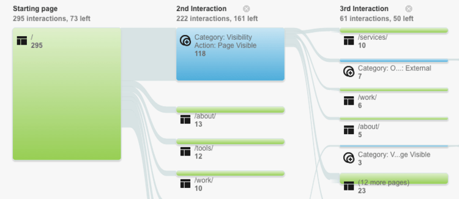
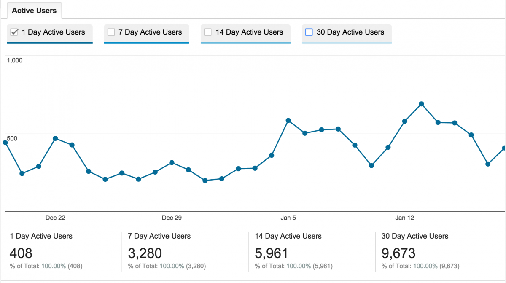
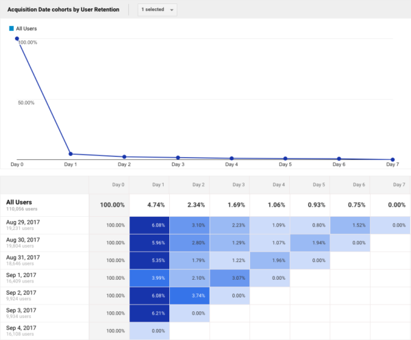

Вземете инфографиката!
Google Analytics е един от най-широко използваните инструменти за наблюдение на показателите за трафика на сайта и предоставяне на марките общо разбиране за това как техните сайтове’ страниците имат ефективност по отношение на посещенията и колко от тези посещения всъщност се превръщат в продажби. Като се има предвид това, едно от най-предизвикателните маркетингови упражнения е да разберете дали аудиториите, които посещават уебсайта ви, всъщност са вашата целева аудитория или те са посетители, които са насочвани към сайта чрез други канали, като социалните медии, но няма реални намерение за покупка, когато става въпрос за афинитет към стойността на вашия продукт. Нека се потопим.
-
ДОКЛАД ЗА ПОТОКА НА ПОВЕДЕНИЕТО
Отчетът за потока на поведението е толкова страхотен ресурс за достъп до визуализация на пътищата, които потребителите са пътували от различни екрани и страници. Този отчет може да ви помогне да разберете съдържанието, което поддържа интереса на потребителите към вашето уникално ценностно предложение, също така помага да се идентифицират потенциални проблеми по отношение на използваемостта и уместността, в случай че някои страници изпитват наистина висок процент на отпадане и излизане.
Според страницата с инструкции на Google Analytics, потокът на поведение може да отговори на въпроси като:
- Има ли събитие, което винаги се задейства първо? Води ли потребителите до повече събития или друго поведение?
- Има ли пътища през вашето мобилно приложение или сайт, които са по-популярни от другите и ако да, това ли са пътищата, които искате потребителите да следват?
- Потребителите отидоха ли направо от продуктовите страници до плащането без допълнително пазаруване?
Като разберете как потребителите навигират във вашето съдържание, е много по-лесно да имате цялостен поглед върху това какво работи за вашето маркетингово съдържание и какво трябва да бъде преназначено или просто да бъде премахнато от потребителското изживяване като цяло.
Source: marketlytics.com
-
АКТИВНИ ПОТРЕБИТЕЛИ
Насочването винаги е половината от предизвикателството. Независимо дали се фокусира върху трафика от социалните медии или директно, много пъти марките изпитват висок трафик, но с малка или никаква конверсия. Това обикновено води до извода, че целевите аудитории не са тези, които действително ще имат потребителско намерение да закупят продукт или услуга. Ако числата са под очакванията, преоценете маркетинговите си усилия, за да видите дали насочвате към подходящите аудитории и дали рекламите ви печелят търгове.
Можете също да потърсите всякакви негативни медии или социално съдържание, което може да повлияе на трафика. В случаите, когато имате много активни потребители за 1 ден, но числата намаляват за дългосрочните потребители, това може да означава, че имате способността да предизвикате моментен ентусиазъм, но програмата за маркетинг на съдържанието не е ефективна за поддържане на дългосрочния интерес. Например много потребители може да изтеглят приложение, но откриват, че то не отговаря на нуждите им или че не привлича интереса им.
Source: amazeemetrics.com/en
-
КОХОРТИ
Кохортният анализ предоставя допълнителни данни към основните ви отчети и помага на вашия маркетингов екип да разбере поведението на конкретни групи потребители, с изключение на вашата потребителска популация като цяло. Според Google можете да използвате кохортен анализ за:
Разгледайте отделни кохорти, за да прецените реакцията на краткосрочни маркетингови усилия, като имейли или известия до потребителите.
Вижте как поведението и ефективността на отделните групи потребители се променят от ден на ден, седмица на седмица и месец на месец в зависимост от това кога сте придобили тези потребители.
Организирайте потребителите в групи въз основа на споделени характеристики, като дата на придобиване, и след това проучете поведението на тези групи според показатели като задържане на потребители или приходи.
Source: yoast.com
-
ТЪРСЕНЕ В САЙТА
Започвайки с прегледа на търсенето за анализ на поведението показва колко от посетителите ви да търсят в сайта ви, термините за търсене, които посетителите използват и как посетителите впоследствие се ангажират с вашия сайт. Наличието на лента за търсене е от ключово значение за изживяването на вашия потребител, в случай че те не намират това, което искат лесно, търсенето им позволява да стигнат до това, от което се нуждаят, по свръхудобен начин.
Това след това ни води до отчета за употребата, който дава разбивка между посещенията, включващи вътрешно търсене в сайта, и тези, които не са го направили. Това ви дава страхотен преглед на ефективността на функцията за търсене. Заедно с отчета за думите за търсене, който дава разбивка на популярните думи за търсене, които посетителите ви използват, както и други параметри, като броя на прегледите на резултатите от търсенето, излизанията от сайта ви след търсене, времето, прекарано в сайта в резултат от търсенето на потребителя и т.н. ще имате страхотна информация за това какво търсят посетителите в съдържанието на уебсайта ви.
-
СЪДЪРЖАНИЕ НА САЙТА
Докладите за съдържанието на сайта за анализ на поведението са докладите за оценка на ефективността на маркетинговите програми за съдържание на вашия уебсайт. Въз основа на получените данни вие и вашият екип можете да прецените дали дизайнът и личността на марката, които сте създали с разказите на вашия уебсайт, действително се изпълняват спрямо целите, които сте си поставили за целите на уебсайта си. Тези отчети включват:
- Всички страници
- Разбивка на съдържанието
- Целеви страници
- Изход от страници